Кейс. Прочитал — и пропал
Проблема: клиент бросает заказ, прочитав несколько откликов.
У Профи списываются деньги, происходит потеря доверия к платформе.
Цель: повысить конверсию сделок
Задача: выявить барьеры клиентов, из-за которых он бросает заказ. Повлияв на которые, произойдет повышение конверсии
Что думают пользователи?
Написала в чатик своего ЖК, чтобы поговорить с людьми и выявить барьеры при выборе специалистов на Профи.ру.
4 - мужчины, 3 - женщины
Все пользовались вашим сервисом.
Выявила интересные барьеры:
1. Клиенты знают, что просмотр отклика платный для специалиста и поэтому не открывают отклики
2. Шаблонные сообщения от профи воспринимаются негативно трактуются как «он не вник в мою проблему»
3. Коммуникация с хамством или высокомерная, обращают на этот параметр в отзывах и при общении
4. Высокая цена (видят высокий ценник и уходят)
5. К портфолио относятся с недоверием «Фотографии можно скачать откуда угодно, не факт что они принадлежат этому мастеру»
6. Заходят посмотреть только цены, чтобы понять сколько стоит такая работа
Что им важно:
1. Отзывы и фото. Желательно персонализировано, мне нужно повесить телевизор я смотрю отзывы как он другим повесил.
2. Профессиональный тон коммуникации, без навязывания допов, без возражений
3. Прозрачность сделки, готовы сотрудничать вне профи, если клиент сам предложит
4. Если мастера рекомендуют, доверие становится высоким
Данные из качественного исследования, каждое утверждение необходимо подтвердить количественно, но для задания буду использовать эти инсайты.
Мои мысли по флоу
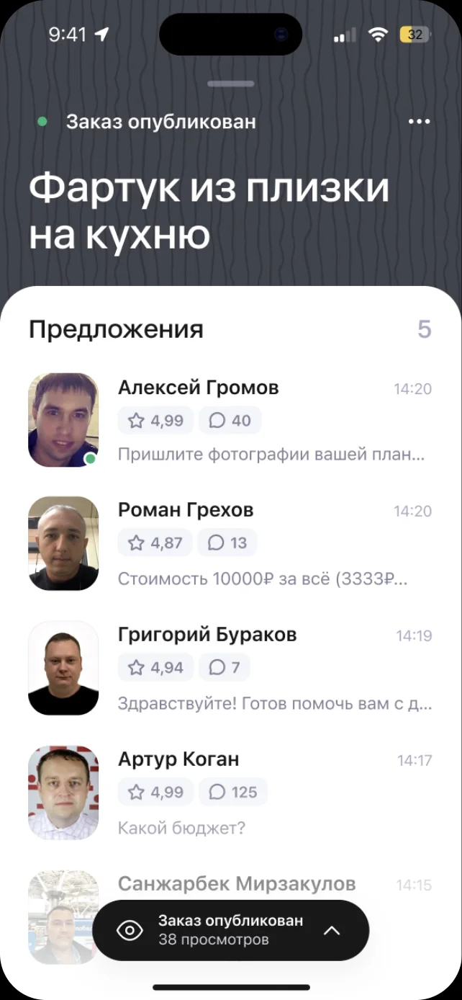
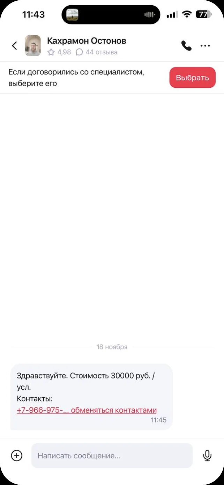
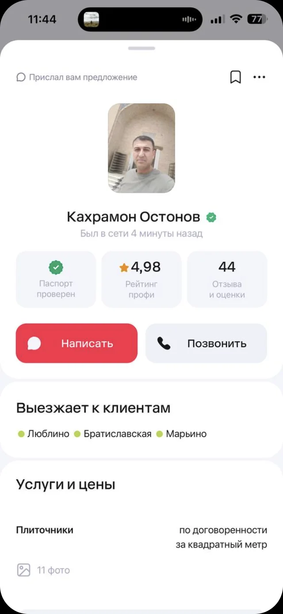
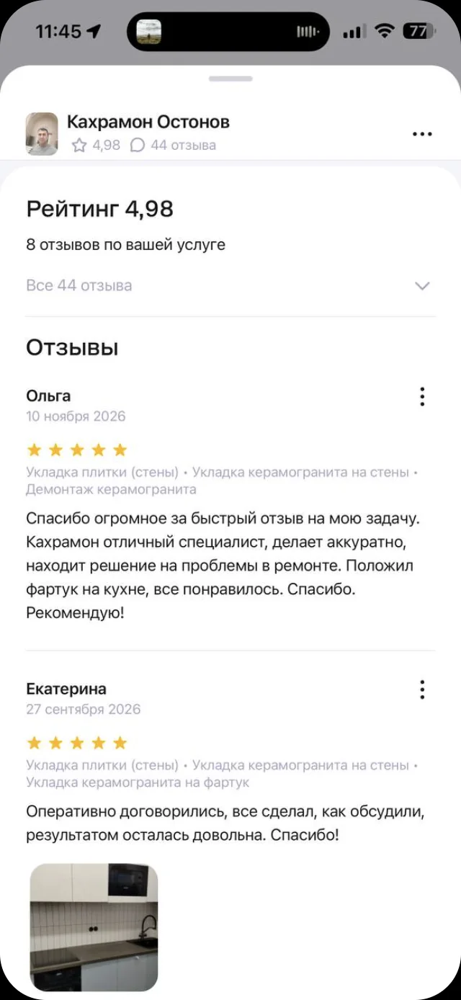
Сортировка спрятана вглубь
Так же я посмотрела, что происходит с пользователем вне флоу. Сервис меня не пытается вернуть в брошенный сценарий...
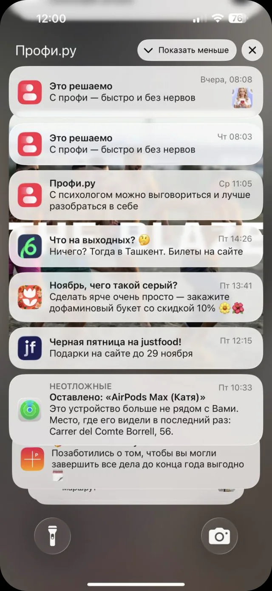
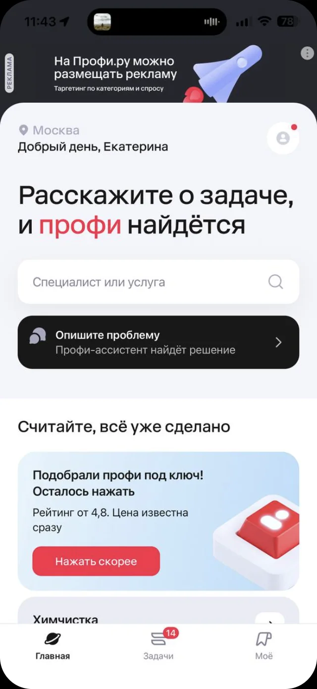
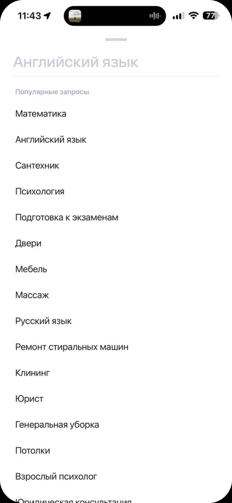
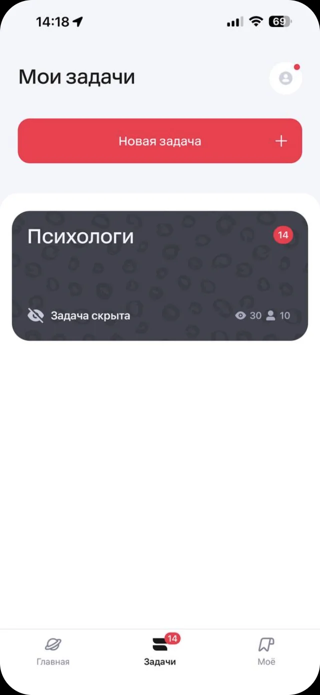
Идеи по улучшению
Список специалистов
Добавить персонализацию, связанную с запросом клиента, так как клиент пойдет это выискивать в отзывах самостоятельно.
Например это могут быть бейджи: 40 заказов по вашей задаче, Мэтч 90%, пример как делает Авиасейлс. Помогаем принять решение
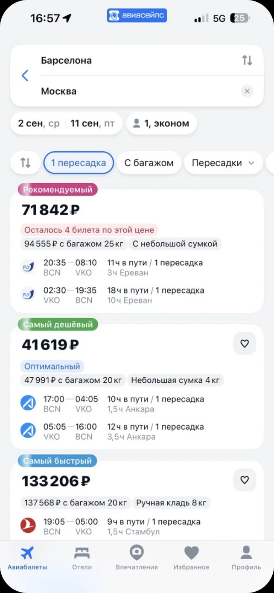
Флоу выбора
Делаю допущение, что чтение отзывов обязательный шаг для большинства (так как это упоминали все)
Сценарий сейчас: Открыть отклик → Чтение сообщения → Переход в профиль → Чтение отзывов → Возврат к списку специалистов → Повторение цикла
Вижу в этом проблему, что клиентам приходится долго добираться до отзыва, через чат. Можно решить это так: Первый вариант, вести пользователя на карточку специалиста, и в ней поднять отзывы в первый экран + сделать фиксированный CTA «Ответить».
Что получим:
1. Клиент не будет тратить деньги специалиста, не убедившись что он ему подходит
2. Меньше кликов до выбора
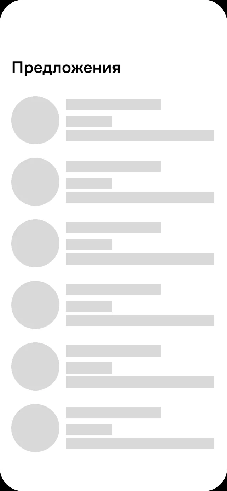
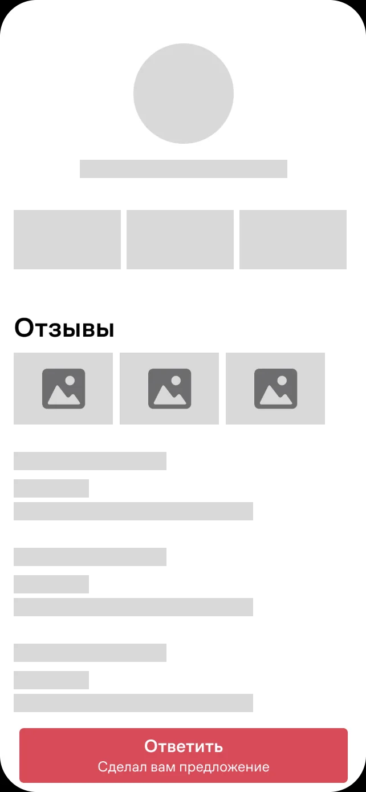
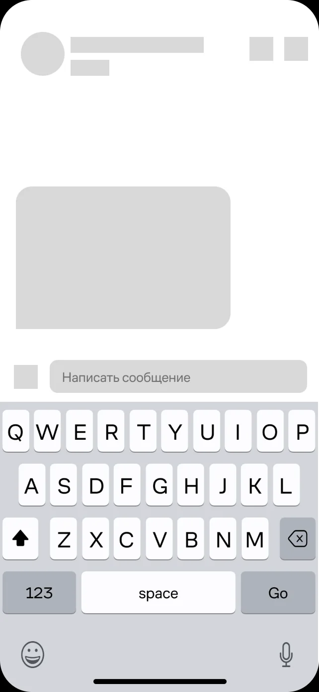
Открыть отклик → Переход в профиль профи → Чтение отзывов → Выбор специалиста
Второй — можно в чат ввести ИИ-саммери отзывов по этой услуге. Обязательно в саммери уделить вниманию: качеству и коммуникации.
Например у Авито есть в чатах сообщения от них.
Что получим: — Облегчаем поиск информации, возможно решение будет принято прям в чате
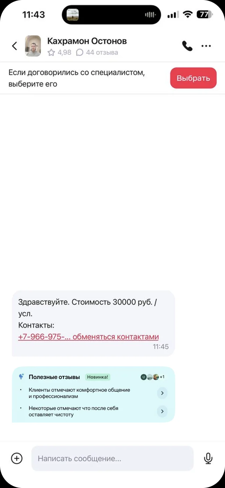
Коммуникация
Сообщение клиенту должно быть персонализировано в профессиональном тоне.
Первое, сделать гайд/шаблон для специалистов по общению (где важно описать этику - без хамства, навязывания допов и тд)
Второе, выцепляем важное из текста объявления и ИИ формирует первое сообщение: обращение по имени, маленькое саммери, почему специалист может взять именно эту задачу. Можно даже задать вопросы в конце и предоставить клиенту чипсы с выборами ответов.
Третье, в отзывах клиентов можно сделать отдельно поле «Коммуникация», чтобы люди самостоятельно не выискивали глазами
Фотографии
Даем приоритет фото клиентов, а после портфолио. В фотогалерее можно сразу давать кнопку «Выбрать специалиста», если пользователь на этом шаге осознал, что Профи подходит
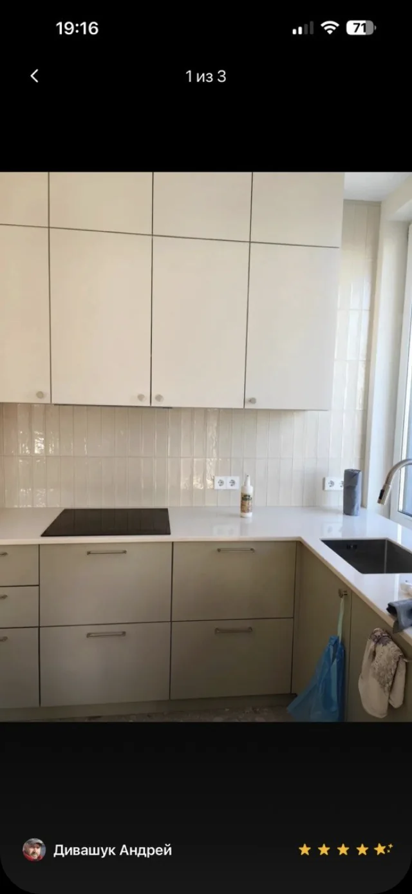
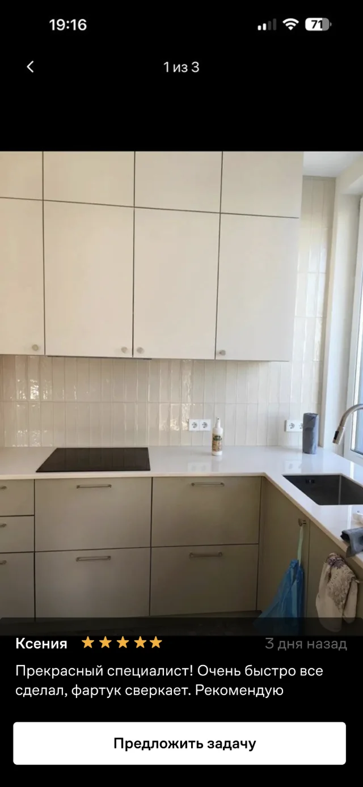
Высокая цена
Дать возможность отредактировать диапазон цен, после того как увидели уже специалистов. Добавить фильтр «Цена».
Возвращение в брошенный сценарий
Нужно сделать пуши, виджет на главной, историю поиска, карточка задачи — все должно напоминать, что клиент бросил сценарий
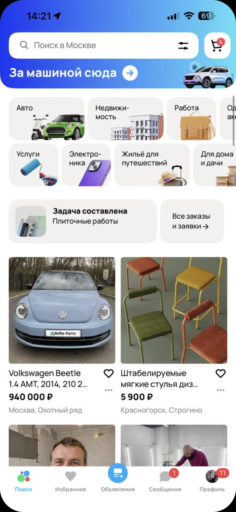
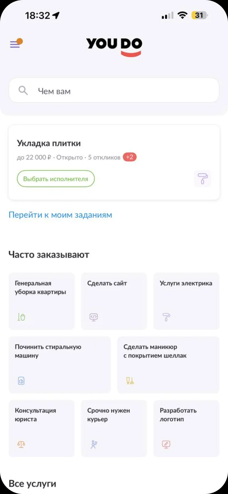
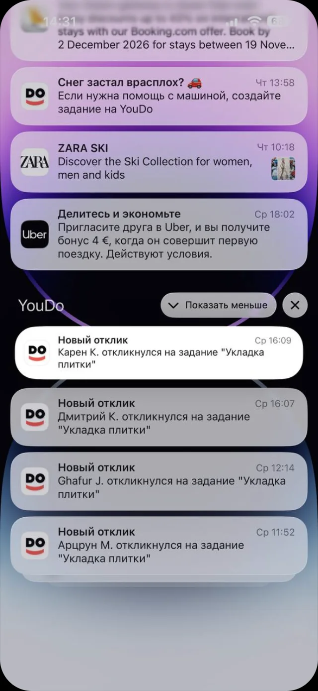
Профи платит за просмотр
Здесь нужно работать над имиджем сервиса, рассказывать через истории как клиенту помогли, что специалисты не бедные-несчастные, а через сервис много зарабатывают. Например, через инфлюэнсеров.
Спасибо
Думаю, что при работе с этими барьерами вырастет конверсия в сделку и специалисты будут меньше платить за просмотры.
Спасибо за внимание